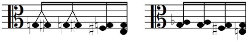

La notation musicale que nous connaissons aujourd'hui est le fruit d'une lente évolution qui a essentiellement condensé au 17ème siècle.
L'ère baroque, nourrie de tempéraments inégaux, a engendré une notation compliquée, c'était considéré comme le prix à payer pour rendre compte des nuances infinies qu'autorisait l'anharmonie (Cf la chronique Gammes et Tempéraments). Etrangement, elle n'a guère évolué même lorsqu'il a été convenu, vers 1800, de simplifier le tempérament en le rendant égal. Serait-ce qu'il avait atteint un état de perfection ne nécessitant aucun aménagement ? Au vu de son incroyable complexité, ce serait surprenant, en tous cas contraire à tout ce qu'on a observé dans les autres disciplines, y compris les plus scientifiquement pointues. De fait, en sciences exactes, mathématique et physique, la notation a beaucoup changé au cours des siècles, dans le sens d'une simplification radicale ne causant, évidemment, aucun préjudice au contenu informationnel de la théorie. Le bénéfice a été immense pour des générations d'étudiants qui ont profité d'une présentation rationalisée leur permettant de se concentrer sur l'essentiel.
Note. Plus personne aujourd'hui ne penserait à étudier la théorie classique de la gravitation dans le mémoire des "Principia (1687)" d'Isaac Newton : c'est un fouillis où seuls s'y retrouvent des historiens de la physique qui lui consacrent leur vie. Il n'est même pas nécessaire de remonter si loin : la théorie de l'électricité est incompréhensible dans les textes d'Ampère (Comment ses contemporains y comprenaient quelque chose a toujours été pour moi un grand mystère). Certes l'essentiel se trouve, en substance, dans ces oeuvres fondatrices mais le décryptage de la notation et du langage utilisés participent davantage de l'égyptologie que de la science. Il a fallu attendre un siècle après Newton, un peu moins dans le cas d'Ampère, pour que Lagrange et Maxwell refondent les exposés, les rendant compréhensibles au plus grand nombre. Le point important est qu'on ait compris qu'une simplification s'imposait et qu'on ait tout fait pour qu'elle se mette en place pour le plus grand confort des générations d'étudiants.
Une évolution similaire s'imposait sans doute également en musique mais elle a largement fait défaut, la notation étant restée attachée à une portée diatonique surchargée d'annotations dont la nécessité ne saute pas immédiatement aux yeux. Une théorie musicale tente de la justifier mais elle est d'une complexité encore pire d'où la difficulté de se convaincre qu'il n'y a réellement pas moyen de faire plus simple.
La portée diatonique
Cycle de 20 quintes (21 notes)
Nous avons rappelé (dans la chronique, "Gammes et Tempéraments"), qu'un cycle de 20 quintes définit 21 notes allant de fab à si# (Les 7 notes classiques, naturelles, diésées et bémolisées). En tempérament égal, on réduit cet ensemble à 12 notes équidistantes (Les points rouges sur la figure) en fusionnant les 9 doublets anharmoniques (réb=do#, etc), proches d'un comma pythagoricien. Cette réduction cavalière mais tellement bienvenue a été adoptée il y a 200 ans et elle n'offense plus personne aujourd'hui, sauf les amoureux de la musique ancienne qui entendent demeurer fidèles aux tempéraments inégaux.
Dans la notation usuelle, les musiciens placent les notes naturelles, dans l'ordre des fréquences croissantes, sur les lignes et les interlignes successives d'une portée à 5 lignes. Les notes altérées sont situées aux mêmes emplacements que leurs homonymes naturels mais elles sont marquées de leur altération afin qu'on les distingue. Si un mouvement musical altère systématiquement une ou plusieurs notes, ces altérations peuvent être (sont) mise en évidence à la clé, ce qui en constitue l'armure.
Portée diatonique en tempérament égal (Seuls les dièses sont représentés)
Gamme (de mi majeur) au tempérament égal
Cette notation respecte deux règles syntaxiques simples qui favorisent la lisibilité de la portée lorsqu'on travaille dans un environnement tonal :
Quelle que soit la tonalité retenue, deux notes de même nom mais porteuses d'altérations différentes n'apparaissent jamais simultanément sur la portée, le contraire serait source de confusions.
Les dièses et les bémols ne sont jamais mélangés au niveau de l'armure (mais cela cesse d'être vrai en cours de développement). Dans l'exemple ci-contre, correspondant à la tonalité de mi majeur, un seul choix des notes constitutives respecte ces deux règles : la, mi, si, fa#, do#, sol# et ré#, soit 4 dièses à la clé.
Nous pensons être d'autant plus à l'aise avec cette notation que les claviers de piano sont conçus pour s'y adapter, réservant les touches blanches aux notes naturelles et les touches noires aux notes altérées.
Clavier de piano (88 touches, 7 octaves et demie)
Touches de piano
Digression concernant les claviers. Si vous avez (bien) observé plusieurs claviers (disons) de pianos, vous avez peut-être remarqué certaines dissymétries, en particulier que les queues de touches blanches ne sont pas toutes de largeurs égales. La conception d'un "bon" clavier pose, en effet, un problème non trivial d'optimisation linéaire, étudié en particulier par Kevin Jones (MathPages). Vu que je lui emprunte les résultats, je conserve ses notations anglo-saxonnes, où les largeurs de touches sont désignées par le symbole littéral de la note correspondante (do=C, ré=D, ..., la=A, si=B). La figure ci-contre devrait vous aider à distinguer, d'une part, les palettes des touches blanches (notées en majuscules) de leurs queues (notées en minuscules) et d'autre part, les largeurs des touches noires (notées en minuscules flanquées d'un dièse). Le problème est qu'il n'est pas possible d'assurer simultanément l'égalité des largeurs des palettes des touches blanches (A=B=C=D=E=F=G), de leurs queues (a=b=c=d=e=f=g) et enfin de celles des touches noires (c#=d#=f#=g#=a#). C'est la conséquence du système d'équations, 3C = 3c + 2c# & 4C = 4c + 3c# dont l'unique solution imposerait c# = 0, ce qui n'aurait aucun sens. Pour des raisons esthétiques (mais aussi pour ne pas compliquer la fabrication des touches), les facteurs de claviers souhaitent conserver l'égalité des palettes blanches et des touches noires (A=B=C=D=E=F=G et c#=d#=f#=g#=a#)) et c'est tant pis pour les queues blanches qui seront de largeurs inégales (Ceci n'est vrai que pour le piano; dans le cas de l'orgue, on a souvent privilégié l'égalité des queues blanches et des touches noires, au détriment des palettes blanches, devenues inégales. Cela dit, vu l'ancienneté des instruments, il n'y a pas deux claviers d'orgue qui se ressemblent). Le problème posé est à présent de minimiser l'écart entre les largeurs de queues. Je vous fais grâce des calculs et vous donne la réponse : c = d = e = C - 2c#/3 & f = g = a = b = C - 3c#/4. L'écart entre les queues longues et courtes vaut c#/12, soit le douzième de la largeur d'une touche noire, ce qui est acceptable. Sur un piano standard, la largeur d'une octave est de l'ordre de 164.5 mm, ce qui donne une largeur de C = 164.5/7 = 23.5 mmm pour une palette blanche (on néglige les interstices). Si on confère une largeur standard de c# = 13.7 mmm aux touches noires, on trouve les valeurs suivantes, effectivement rencontrées chez un grand nombre de pianos modernes : c = d = e = 14.37 mmm & f = g = a = b = 13.23 mm. Ces valeurs sont compatibles avec une activation des touches blanches au niveau de la queue, un jeu qui permet une grande délicatesse dans le toucher, tel que le pratiquait le grand Vladimir Horowitz. A noter que l'on pourrait encore diminuer les inégalités entre les largeurs des queues mais ce serait au prix d'un écart entre les palettes F, G, A et B, plus larges que C, D et E de 2% environ.
La portée diatonique n'est simple qu'en apparence car dès qu'on l'examine de près, il s'avère que son (dé)codage s'apparente à un véritable casse-tête. En particulier, ce que l'on voit ne correspond pas à ce que l'on entend, ce qui est plutôt fâcheux pour un système qui entend favoriser la lecture à vue. Analysons-là de plus près (Certaines figures qui suivent sont sous Licence CC, Music Notation Project, cf infra) :
La portée classique ne respecte pas l'octave : les do successifs y apparaissent alternativement sur une ligne et sur une interligne. Ce désordre est encore fort anodin.
La diversité des tessitures des instruments, y compris de la voix, a suggéré le recours à un système de clés (de sol, de fa et d'ut, dont il existe plusieurs versions) opérant une translation verticale et globale des notes. Les corporations d'imprimeurs, de cornistes, d'altistes, etc, ne sont pas pour rien dans cette invention, où tout est prévu pour économiser l'espace disponible en n'utilisant que l'encre noire (Un code des couleurs, une par octave, viendrait aisément à bout du problème posé). La manie des clés a fait fureur au 19ème siècle, surtout en France, où on en a compté jusqu'à 10, un vrai cauchemar pour les apprentis ! On a heureusement fini par en limiter l'usage dans l'enseignement général.
La portée classique case aux mêmes emplacements (lignes ou interlignes) les notes homonymes, naturelles ou altérées. Les altérations faisant partie de l'armure affectent les notes de même nom, quelles que soient leur position verticale, même s'il y a octaviation. Le (dé)chiffrage de la portée doit combiner les informations codées par la clé et l'armure mais aussi les altérations passagères que le compositeur estime nécessaires. Celles-ci demeurent valables au sein de la mesure en cours mais elles s'éteignent ensuite sauf si elles sont renouvelées. Enfin, on neutralise une altération existante en affectant la note d'un bécarre (♮), un symbole qu'on utilise aussi dans tous les cas où la confusion est devenue telle qu'il s'impose de préciser que la note voulue est naturelle.
Deux notes situées en un même emplacement mais portant des altérations différentes ne sonnent pas de la même façon (On a indiqué l'écart en demi-tons) :
Ces notes sonnent différemment
Inversement, deux notes situées en des emplacements distincts peuvent parfaitement sonner pareillement :
12 groupes de notes anharmoniques sonnant pareillemment
Un simple enchaînement do-ré peut se concevoir de 25 manières différentes selon que les notes sont naturelles, simplement ou doublement altérées. L'encadré sur la figure suivante rappelle les 8 configurations les plus probables, les autres étant nettement exotiques. Les chiffres en indices mentionnent à nouveau le nombre de demi-tons entre les notes dans chaque cas : on constate qu'on peut entendre jusqu'à 9 enchaînements sonores différents. La figure est dessinée en clé de sol (sinon tout change !) et sans altération à la clé (sinon tout rechange !).
25 jeux d'altérations sur do-ré (Licence CC MNP)
On retrouve la même complexité au niveau des accords. Sur le papier tout semble simple, les intervalles se calculant sur base de la distance qui sépare les notes, en comptabilisant les lignes et les interlignes.
Intervalles harmoniques
Mais cette simplicité n'est qu'apparente car elle met dans le même sac des intervalles différents sans préciser leur qualité (juste, majeur ou mineur). Ce renseignement vital dépend de la position verticale des intervalles donc de la clé utilisée.
Tierces majeures (M) ou mineures (m) ?
Tout se complique en cas d'altération(s). Observons les deux figures qui suivent : celle de gauche affiche 5 versions d'un "accord" de deux notes utilisant les mêmes positions relatives sur la portée mais sonnant différemment, avec, dans l'ordre, 2 (tierce diminuée), 3 (tierce mineure), 4 (tierce majeure), 5 (tierce augmentée) et 6 (tierce doublement augmentée) demi-tons d'écart. La figure de droite illustre la situation inverse de deux notes qui sonnent constamment à 3 demi-tons de distance bien qu'elles occupent des positions différentes. Leurs fonctions sont, dans l'ordre, une seconde augmentée, une tierce mineure et une quarte doublement diminuée :
Intervalles tels que vus et entendus
Chacun des points évoqués, considéré individuellement, peut sembler anodin. Après tout, les conventions d'écriture sont inévitables dans tous les domaines où une notation sophistiquée est nécesaire et si certaines sont malheureuses, elles sont tellement ancrées dans les habitudes qu'on perdrait son temps à essayer de les corriger; on finit par s'y faire. Mais il arrive un moment où l'accumulation des embûches finit par effrayer. Voici un exemple même pas extrême, cinq mesures empruntées à la Rhapsodie hongroise n°2 de Franz Liszt, où 6 dièses à la clé sont systématiquement remis en cause par un flot d'altérations passagères. Lorsque vous découvrirez plus loin la transcription limpide de ce passage sur une portée chromatique, vous commencerez à réaliser que quelques chose ne tourne pas rond dans la notation traditionnelle lorsqu'elle est au service du tempérament égal.
Au fond, les difficultés rencontrées sont la conséquence de la non linéarité de la portée diatonique : les intervalles entre les notes consécutives ne sont pas constants. En tempérament égal, revoyez la figure qui ouvrait cette section, ils ne sont que de deux types (ton entier et demi-ton, d'où l'appellation "diatonique") mais c'est pire en tempérament inégal où il faut distinguer les demi-tons chromatique et diatonique. La surcharge des symboles présents sur une partition provient de ce qu'il faut en permanence compenser l'absence de linéarité dans la progression des intervalles.
Les apprentis persévérants mettent des années à s'y retrouver. Les musiciens chevronnés, qui sont tous passés par là, expliquent, avec la meilleure foi du monde, qu'ils ne voient pas le problème, que c'est comme cela qu'ils ont appris la musique, que les suivants n'ont qu'à faire pareil et enfin, sentence définitive, qu'il n'y a pas moyen de faire autrement car cette graphie compliquée représente, en fait, l'orthographe musicale qu'il faut connaître (On reviendra sur ce point). Et simplifier l'orthographe, c'est bien connu, est une opération rarement couronnée de succès !
Ah l'orthographe !
A y réfléchir, il existe un autre domaine où l'on se trouve confronté à une situation du même genre : les gardiens de la langue française tiennent particulièrement au respect d'une orthographe qu'on trouve dans les écrits de Voltaire (1694-1778), qui ne faisait qu'appliquer des règles dédicacées à l'usage des lettrés par son professeur, Pierre-Joseph Thoulier (dit l'abbé) d'Olivet (1682-1768).
Des voix se sont régulièrement élevées pour réclamer une simplification des subtilités syntaxiques dont le français s'est fait une spécialité et qui culminent dans une liste interminable d'exceptions contradictoires. Si ces appels n'ont jamais vraiment été entendus (au contraire de ce qui s'est passé en Italie, en Espagne, jusqu'en Turquie !), c'est qu'une Académie toute-puissante veille sur son fonds de commerce et tant pis pour les nouvelles générations ou pour les étrangers qui ne comprennent pas pourquoi "sonnant" prend deux "n" alors que "consonant" ou "dissonant" n'en prennent qu'un et ce n'est qu'un exemple fort anodin. Car un inventaire affligeant a été dressé depuis longtemps qu'il vaut la peine de rappeler brièvement afin qu'une fois encore on prenne conscience du problème.
En 1904, cela ne date pas d'hier, Monsieur Paul Meyer (1840-1917), Membre de l'Institut, a été sollicité par son ministre de tutelle pour présider une commission chargée d'examiner les conditions d'une réforme de l'orthographe française d'usage. Il en a résumé les recommandations circonstanciées dans un mémoire intitulé Sur la simplification de notre orthographe. Bien qu'au bilan il n'ait été suivi d'aucun effet, ce document parfaitement argumenté vaut une lecture attentive tant il est édifiant. Il démontre, exemples à l'appui, que les justifications étymologiques, régulièrement invoquées pour justifier l'immobilisme, fonctionnent très imparfaitement et souvent même à contresens. Je me contente de résumer le paragraphe réservé aux lettres "g" et "j", responsables de l'une des pires irrégularités de notre orthographe. Cet exemple a ceci de précieux qu'il prépare, en musique, l'épineux problème de la synonymie des notes anharmoniques.
Le g marquait en latin le son de la gutturale sonore
ou faible devant toute voyelle. Peu à peu il s'altéra devant e, i, et arriva graduellement au son palatal que nous figurons par j. Il eût été naturel de le remplacer par cette lettre, et on le fit en certains cas, mais le plus souvent la graphie resta fidèle au g; seulement, il fut convenu que, devant e et i, le g aurait le son du j : geindre (de gemere), gent (de gentem). Par contre, pour rendre au g suivi d'e, i, sa valeur ancienne, il fallut lui adjoindre un u. ... Il est assurément incommode et illogique de donner au même signe g deux valeurs, selon la voyelle qui suit et il est surtout superflu d'avoir deux manières (ge et j) de rendre un même son (donjon et mangeons, goujat et orgeat). De plus, en certains cas, la graphie par ge prête à confusion. Ainsi, dans les mots gageure, vergeure, beaucoup de personnes, ne sachant pas que l'e n'a été introduit que pour donner le son palatal au g, prononcent, non pas gajure mais gageure, avec le son qu'a le groupe eu dans heure.
Il n'y a que deux moyens de supprimer cette cause de confusion. Le premier consiste à munir le g palatal d'un signe diacritique comme on l'a fait pour le c (cédille), l'autre à substituer le j au g palatal. Le premier moyen étant inapplicable - le g a une forme trop allongée pour qu'il soit possible de le munir d'une cédille et d'ailleurs les imprimeurs protesteraient - le seul parti à prendre est donc de substituer partout j à g palatal. On écrira donc manjer, manjons, manjant, oblijer etc.
A cette réforme, on ne peut même pas opposer le pitoyable argument de l'étymologie, car c'est l'orthographe officielle qui nous oblige à écrire genièvre avec un g, contrairement à l'étymologie (juniperus). A ce compte, ne faudrait-il pas, pour être conséquent, écrire geambe au lieu de jambe, puisque le type. étymologique est le latin populaire gamba ?
Ce n'est un secret pour personne, l'orthographe française est de plus en plus maltraitée par les nouvelles générations qui voient de moins en moins l'intérêt de se plier à toutes ses fantaisies. Même la grammaire subit leurs assauts (in)volontaires, parfois anodins - qui s'amuse encore à placer les subjonctifs exotiques ? -, parfois dangereux pour la compréhension.
A première vue, l'orthographe musicale semble bien mieux respectée par la jeune génération mais c'est une illusion : tout le monde doit apprendre à écrire mais tout le monde n'apprend pas la musique et parmi ceux qui s'y risquent, une forte proportion jette rapidement l'éponge or ceci n'est pas étranger à cela.
La musique n'est pas un métier qu'on apprendrait en entrant à l'université, vers ses 18 ans. On peut entamer des études supérieures en sciences et apprendre la physique quantique en 5 ans, avec son baccalauréat pour seul bagage, cela est impensable en musique. Celui qui n'est pas musicien à dix ans risque fort de ne l'être jamais car seul un enfant malléable peut adhérer à un système alambiqué à ce point.
Rien que sur les 200 dernières années, on a dénombré plusieurs centaines (!) de propositions de réformes de l'orthographe musicale mais toutes, à ce jour, ont échoué. Maladresse, Frilosité, Conservatisme ou Mirage, la question mérite un examen attentif.
Le nombre élevé des propositions faites a probablement nuit à leur entreprise car on imagine bien la lassitude d'une commission qui aurait dû les examiner toutes. L'effet pervers de cette pléthore, c'est que même lorsqu'une tentative intéressante s'est présentée, elle est passée à la trappe comme toutes les autres.
Jean-Jacques Rousseau, le philosophe bien connu, a été un précurseur inattendu en matière de rationalisation de la notation musicale. Il était musicien, à ses heures, au point d'avoir composé quelques oeuvre(tte)s sans prétention (Le Devin du Village) et aussi d'avoir polémiqué avec Rameau dans le cadre de la célèbre Querelle des Bouffons. Avec le recul, s'il semble étrange que d'Alembert et Diderot aient pensé à lui pour collaborer à l'Encyclopédie dans le domaine musical, il apparaît que son statut d'amateur distingué lui a permis de défendre des points de vue inhabituels non dépourvus de bon sens.
Il était dans l'air du Temps des Lumières de classifier et de rationaliser tous les domaines de l'activité humaine (calendrier, poids et mesures, etc). Le 22 août 1742, Rousseau a présenté devant l'Académie des Sciences (sic) un Projet concernant de nouveaux signes pour la musique, reposant sur une succession de chiffres désignant les notes. Les commissaires, Mairan, Hellot et Fouchy, l'ont recalé pour trois raisons passablement douteuses, à savoir que la méthode proposée 1) était incompatible avec la pratique de la transposition - ce qui est inexact -, 2) ne présentait aucune utilité suffisante pour remplacer la musique ordinaire - c'est partiellement vrai, Rousseau n'a éradiqué que l'usage des clés mais pas celui des altérations, qui subsistent sous la forme de barres obliques traversant les chiffres, en montant (/ dièses) ou en descendant (\ bémols) - et 3) qu’elle rappelait celle déjà proposée par le Père Jean-Jacques Souhaitty en 1677. Seul Rameau, consulté indépendamment, fit l'objection sérieuse que l'interprète confronté à une cascade de notes ascendantes ou descendantes avait besoin du support visuel de la portée pour en suivre l'évolution, ce que la succession des chiffres de Rousseau ne permettait guère. L'objection de Rameau semble rétrospectivement un brin étrange car s'il y a bien un système qui pêche par manque de visibilité, c'est le système traditionnel.
Il y avait, de fait, mieux à redire. Le système de Rousseau est parfaitement viable dans une approche monodique élémentaire, d'ailleurs il a refait surface en Chine où il est apprécié pour les facilités qu'il offre dans le cadre de l'initiation des enfants. Par contre, il rencontre de réelles difficultés au niveau de la synchronisation des voix polyphoniques. Elles pourraient certes être résolues mais ce serait au prix de complications qui feraient perdre sa belle simplicité à la méthode. Si vous voulez approfondir la question, reportez-vous au document intitulé Le Devenir du Système de Notation musicale de Jean-Jacques Rousseau, issu des recherches du musicologue canadien, Claude Dauphin.
Une notation duodécimale
En conservant l'arithmétique traditionnelle, en base 10, Rousseau était passé à côté du vrai problème, l'adoption imminente du tempérament égal requérant quasiment une arithmétique en base 12. Cependant Rousseau était, comme beaucoup de ses contemporains, un adversaire farouche du tempérament égal !
Simon Stévin
Avec le nombre de mathématiciens (Euler, d'Alembert, ...) et de physiciens (Stévin, Sauveur, Huyghens, ...) de l'époque qui se sont intéressés à la théorie musicale, on peut se demander ce qui se serait passé si le tempérament égal avait été adopté plus tôt. On peut raisonnablement imaginer qu'il se serait bien trouvé un de ces savants pour proposer un modèle purement numérique précisément fondé sur l'arithmétique en base 12.
En fait, le brugeois, Simon Stévin (1548-1620), fut précocement dans ce cas, qui publia le résultat de ses réflexions dans l'ouvrage Van de Spiegheling der Singconst ("Sur la théorie de l’art de chanter", publié vers 1605, perdu puis retrouvé récemment et en attente d'une réédition imminente). Ses recommandations étaient tellement en avance sur leur temps qu'elles ne furent suivies d'aucun effet.
Dans le système duodécimal, les 12 chiffres se notent 0, 1, 2, 3, 4, 5, 6, 7, 8, 9, X (pour dix) et Y (pour onze) et un entier à deux chiffres, mn, suffit pour désigner chaque demi-ton donc chaque note :
Le chiffre des douzaines, m, désigne l'octave à laquelle la note appartient. Il importe de numéroter ces octaves selon la recommandation internationale qui situe le la du diapason dans l'octave n°4 (la4 = 440 Hz). Cela permet de démarrer la plage audible au do0 = 16.35 Hz. La convention européenne (la3 = 440 Hz) obligerait à situer le premier do dans une octave n°-1, ce qui ne permet pas la numération en base 12 (Le chiffre des douzaines ne peut être négatif).
Le chiffre des unités, n, désigne la note (tempérée) selon le codage suivant :
do = 0, do# = réb = 1, ré = 2, ré# = mib = 3, mi = 4, fa = 5
fa# = solb = 6, sol = 7, sol# = lab = 8, la = 9, la# = sib = X, si = Y
Le la du diapason se note donc 49, dans ce système, que vous seriez bien avisés de prononcer quatre-neuf et non quarante-neuf, afin d'être certains de ne pas mélanger intempestivement les arithmétiques en bases 10 et 12.
La figure suivante reprend les 88 touches du piano moderne, du la0 (09 = 27.5 Hz) au do8 (80 = 4186 Hz), chaque touche recevant son code duodécimal. Observez que ce code est pair pour les notes do, ré et mi et impair pour les notes, fa, sol, la et si, c'est le prix minimum à payer pour (r)établir la linéarité de l'échelle des sons.
Clavier de piano (annotation duodécimale)
Toute partition peut être transcrite en base 12 : aucune portée n'est nécessaire et une suite de nombres suffit. Des raffinements sont évidemment requis afin de préciser les paramètres de durée, d'intensité, de ligature, etc, mais ils ne posent pas de problèmes particuliers. Un accord peut être représenté par un vecteur colonne qui empile de bas en haut les notes constitutives au départ de la note fondamentale. La notation, entièrement linéaire, n'implique que des calculs arithmétiques élémentaires en base 12. On fixe les idées en transcrivant, comme suit, le fragment lisztien ci-dessus (les lignes horizontales simples ont valeur de croches et les points ont leur signification habituelle quant à la durée des notes) :
Fragment lisztien (Rhapsodie hongroise n°2) en notation duodécimale
Bien que ce codage affiche instantanément chaque note, octave comprise, on présume que les musiciens resteront attachés aux motifs dessinés par les notes sur une portée. La portée chromatique exaucera ce voeu (Cf infra).
Cette notation est absolue en ce qu'elle renseigne chaque note individuellement. On pourrait préférer une notation relative où chaque note, à partir de la deuxième, serait désignée par la différence calculée à partir de celle qui la précède (mélodiquement) ou qui la supporte (harmoniquement). L'exemple proposé serait particulièrement adapté à ce codage relatif puisque les accords de tierces et d'octaves y progressent mélodiquement par augmentation ou diminution d'un demi-ton. Ceci rencontrerait éventuellement l'objection faite par Rameau et relative aux cascades de notes, l'exécutant étant présumé capable d'aditionner ou de soustraire deux entiers, fussent-ils écrits en base 12. On présume cependant que les musiciens allergiques à l'arithmétique préféreront ignorer cette remarque et s'en tenir à une portée chromatique.
La portée chromatique
A partir de 1850, date estimée de l'adoption définitive du tempérament égal, les propositions de réforme de la notation musicale se sont assez normalement multipliées. La plupart ont été l'oeuvre de scientifiques, éventuellement musiciens amateurs, telle la Méthode Frémond, du nom de cet ingénieur (!) qui s'est particulièrement investi dans un projet qui lui a valu un Prix à l'Exposition universelle de Chicago, en 1893.
Les musiciens professionnels n'ont jamais vu l'intérêt de ce genre d'entreprises : ils ont par définition franchi l'obstacle de la théorie musicale et, en ce qui les concerne, ce serait précisément les encombrer que de changer quoi que ce soit à des habitudes si chèrement acquises.
Echaudés par l'échec de nombreuses tentatives, les candidats réformateurs sont actuellement majoritairement ligués au sein d'une association favorisant les échanges critiques qui ont peut-être fait défaut à leurs prédécesseurs.
The Music Notation Modernization Association (MNMA) existe, aux USA, depuis 1985. Elle a fait place, en 2008, au Music Notation Project (abrégé dans ce texte en MNP). Comme son nom l'indique, cette institution aspire à une refonte de la notation musicale, conformément au Credo suivant :
The goal is to address the shortcomings of traditional music notation that make reading music substantially more difficult than necessary, pose unwarranted hardships for musicians, and prevent many young people from becoming fluent music readers. Le but est de rencontrer les difficultés de la notation musicale traditionnelle qui rend la lecture d'uhe partition inutilement difficile, posant des difficultés injustifiées aux musiciens et décourageant un nombre anormalement élevé de jeunes apprentis.
Bien qu'ouverte à tous, cette association est majoritairement composée de musiciens, ce qui est plutôt bon signe. Qu'aucun ne soit un "grand" musicien n'a pas vraiment d'importance pourvu qu'il soit bon pédagogue. Après tout, les bons professeurs de chant ne sont pas forcément de grands chanteurs.
Le site de l'association propose une analyse critique de la notation usuelle et définit les critères d'une notation améliorée. Il propose également une galerie de prototypes de portées chromatiques, où, par définition, les 12 demi-tons de la gamme tempérée sont disposés à égales distances les uns des autres. Le but avoué est de supprimer les altérations et les clefs et de rendre la transposition immédiate. Le slogan est clair et net :
Une Position = Une Note = Un Son
Une portée chromatique
Les esprits chagrins chicaneront en faisant observer que cinq lignes ne suffisent pas pour parcourir une octave complète et que cela représente un gaspillage d'espace malvenu. Nous verrons, ci-après, comment les notations de Busoni et Godjevatz pallient cet inconvénient mineur.
Ferruccio Busoni
Au 20ème siècle, de nombreux auteurs ont proposé leurs variantes de la portée chromatique, omettant le plus souvent de signaler qu'on en trouvait déjà un bel exemple dans un écrit théorique de l'illustre pianiste-compositeur, Ferrucio Busoni (1866-1924), intitulé "Essai d'une notation organique pour le piano (1910)". Très connu pour ses transcriptions d'oeuvres de J-S Bach, Busoni a poussé la démonstration jusqu'à l'adaptation complète à sa notation de la complexe Fantaisie chromatique et Fugue BWV 903. les puristes feront remarquer qu'elle privait d'emblée la partition de sa dimension baroque au profit d'un (re)vision romantique mais c'était en tout cas la preuve que le geste romantique n'y perdait rien.
La portée de Busoni requiert 5 lignes par octaves avec un espacement doublé entre les lignes 2 et 3 afin d'améliorer la visibilité. La position relative de ces lignes suit la disposition des touches noires du piano : les notes posées sur ces lignes sont donc les notes chromatiques. Busoni a proposé de renforcer cette coïncidence en noircissant les notes sans que cela signifie le moindre rapport avec la notion de durée comme il est d'usage (Il a préconisé des formes géométriques simples autres que le cercle pour distinguer les rondes et les blanches). Les notes naturelles occupent les interlignes et les octaves successives s'empilent en continuant de respecter la disposition des touches noires.
Notation chromatique de Busoni
Voici ce que devient, dans ce système, le fragment lisztien qui nous sert d'exemple depuis le début :
Fragment lisztien dans la notation de Busoni
Arnold Schönberg : le style et l'idée
Un autre grand compositeur du 20ème siècle, Arnold Schönberg, a également milité en faveur d'une portée chromatique. Ce n'est guère une surprise car s'il est un domaine où cette portée s'impose, c'est bien celui de la musique dodécaphonique. Dans ce système, les 12 sons sont placés sur un pied strict d'égalité entre lesquelles il n'existe plus aucune relation privilégiée par quelque fonction tonale qui ont de fait disparu.
Schönberg s'est exprimé sur la question de la notation dans une série d'écrits qui ont été rassemblés (et traduits en français) dans un ouvrage recommandable, intitulé "Le Style et l'Idée" (La Notation : Titre VII, §15). Schönberg commence par y rappeler brièvement quelques défauts qui grèvent la notation usuelle :
Elle nomme les notes alors qu'elle devrait noter les sons.
L'octave comporte 12 intervalles et non 7 et chacun doit trouver sa place sur la portée.
Elle n'est guère lisible dans les cas où l'on veut noter des "accords" (dissonants) portant sur un demi-ton. Schönberg cite l'exemple suivant (à gauche) où une notation verticale n'est même plus possible, d'où il se voit contraint de la remplacer par celle de droite, mélangeant allègrement dièses et bémols :

Notation encombrée d'accords par demi-tons
Le bécarre est un signe superflu qui n'a pour seule utilité que de lever les ambiguïtés inhérentes à une notation déjà trop chargée. Il n'existe d'ailleurs pas de consensus sur son mode d'emploi, variable selon les auteurs.
L'article de Schönberg se poursuit par l'exposé de sa variante personnelle de la portée chromatique. L'octave s'y décline sur une portée de quatre lignes seulement mais - il n'y a pas de miracle ! - c'est au prix d'une complication graphique, l'apposition d'une barre oblique à gauche, au centre ou à droite de la note, ce qui altère son pouvoir de séduction. La portée s'ouvre et se ferme avec deux do à l'octave l'un de l'autre, ce qui est plaisant, mais les notes naturelles reçoivent un traitement différent au niveau de la barre ajoutée, ce qui l'est moins. Au bilan, la notation de Schönberg n'a convaincu que son auteur - et encore, il ne l'a guère utilisée que dans ses écrits théoriques - ce qui semble prouver que les traditions ont la vie dure même chez les révolutionnaires.
Notation chromatique de Schönberg (1924)
Notation de Hauer
Nous avons vu, dans une chronique antérieure, que Joseph Mathias Hauer avait précédé de peu Schönberg dans ses recherches dodécaphoniques. S'il avait bien vu la nécessité d'adapter la notation, celle qu'il a inventée était d'une nature très différente, se servant d'une portée à 8 lignes, c'était la conséquence d'une technique particulière de composition, basée sur la notion de trope. Cette notation, unique en son genre - comme son auteur ! - ne fut utilisée que par lui.
La notation de Godjevatz
Rapport de G-B Shaw
Parmi les nombreuses variantes recensées par le MNP et exploitant les vertus de la portée chromatique, il en est une dont la sobre clarté a retenu mon attention (facsimile). Elle est due à Velizar Godjevatz (1898-1986), un obscur musicien américain sans doute d'origine bulgare. Elle a été publiée, en 1948, dans une revue improbable, la Dozenal (formerly Duodecimal) Society of America, qui prône, sans grand succès, la généralisation du système arithmétique en base 12 dans tous les secteurs d'activité de la société. Il n'est pas clair si Godjevatz était conscient que sa méthode était proche de celle proposée par Constance Virtue, dès 1933, et, encore moins, conscient de son lien de parenté avec celle de Busoni. Quoi qu'il en soit, le célèbre critique musical, George Bernard Shaw, sollicité par la Société en tant que rapporteur, a rendu un avis positif sur cet essai. Il est dommage qu'il ait paru dans une revue aussi confidentielle car cela le condamnait à rester dans une ombre qu'il n'a, de fait, jamais quittée.
4 ème octave, selon Godjevatz
La figure ci-dessus représente l'octave n°4 complète (du do inférieur au do supérieur) sur une portée à 7 lignes. Pour plus de lisibilité, la ligne médiane n'est pas dessinée, elle n'est qu'esquissée lorsque la note, nécessairement un fa# (= solb), vient s'y placer. Observez que les trois premières notes naturelles (do, ré et mi) occupent les 3 lignes inférieures tandis que les quatre dernières (fa, sol, la et si) occupent les interlignes supérieures.
Les degrés usuels, repérés par rapport au do, sont identifiables en suivant la même logique, les trois premiers, tonique (Ⅰ), seconde (Ⅱ) et tierce (Ⅲ) occupant les 3 lignes inférieures et les quatre derniers, quarte (Ⅳ), quinte (Ⅴ), sixte (Ⅵ), septième (Ⅶ) occupant les 4 interlignes supérieures. Puis on poursuit avec l'octave (Ⅷ), terme auquel Godjevatz préférait le vocable "homosonance".
Octaves 4 et 5, selon Godjevatz
Chaque octave est numérotée à gauche de la portée et deux octaves successives, par exemple n°4 et 5, se raccordent exactement, leur empilement faisant apparaître une sous-portée à 5 lignes.
La portée de Godjevatz bénéficie évidemment des avantages de la portée chromatique : plus de clé, plus d'altération et une transposition à vue désormais triviale. On peut transcrire le fragment lisztien dans ce système et, comme c'était déjà le cas avec la méthode de Busoni, il saute aux yeux que ce qui paraissait si compliqué dans la notation usuelle n'est, en fait, qu'une succession de progressions (ascendantes et descendantes) d'accords par demi-tons. Il n'est pas possible de faire plus simple.
Fragment lisztien dans la notation Godjevatz
Objections sémantiques
Aucune des réformes évoquées n'ayant réellement fait fortune, l'honnêteté intellectuelle réclame qu'on se penche sur les raisons de tant d'échecs successifs. Précisons une fois pour toutes qu'elles ne concernent véritablement que l'orthographe grammaticale, la variante d'usage (altérations redondantes, en particulier au niveau du bécarre, etc) ne posant pas, en musique, les problèmes nombreux et agaçants de la langue française.
La situation est claire dans deux cas bien tranchés :
La musique modérément ancienne est indissolublement liée au tempérament inégal qui a engendré l'orthographe actuelle. On peut la trouver compliquée mais on ne la changera pas : un répertoire immense est rédigé selon ses règles et le respect de l'éloquence baroque est sans doute à ce prix. Depuis l'ascension du mouvement baroqueux, la Musique entretient un rapport fusionnel avec son passé ancien d'où on peut comprendre l'utilité d'avoir maintenu intacte l'orthographe d'époque. Mais précisément, on se préocupait fort peu de musique ancienne au 19ème siècle et on s'explique mal qu'on ait pas mis à profit l'adoption définitive du tempérament égal pour simplifier la notation. Les initiatives n'ont pourtant pas manqué, à cette époque, au point d'avoir provoqué l'agacement du célèbre musicologue François Joseph Fétis (Vous trouverez une énumération impressionnante de propositions avortées dans l'ouvrage de L. Bouissou, C. Goubault et J-Y Bosseur, "Histoire de la Notation de l'époque baroque à nos jours", paru aux éditions Minerve).
A l'opposé, la musique dodécaphonique se fonde sur le tempérament égal d'où la portée chromatique s'impose comme l'outil de choix. Qu'elle n'ait même pas été adoptée par les adeptes de la musique à 12 sons est une anomalie incompréhensible qui ne peut résulter que d'une sérieuse propension à l'inertie.
Entre ces extrêmes, la situation est nettement plus délicate. Bien que le tempérament égal ait été adopté à partir des années 1800, la notation est demeurée en l'état, comme si ce changement n'avait pas eu lieu ou, du moins, comme s'il avait été sans conséquence. L'argument traditionnellement invoqué pour justifier cet immobilisme est que l'orthographe usuelle est seule garante des intentions du compositeur. Quel sens peut-on donner à une telle idée ?
La musique est l'art subtil d'un auteur, qui, ayant en tête une construction sonore (narrative, descriptive, poétique, ...), désire la partager avec le plus grand nombre, au-delà des frontières et des siècles. En peinture, tout serait simple, le tableau serait là, prêt à l'emploi mais, en musique, des intermédiaires sont requis. Le compositeur est contraint de coder ses idées sur une partition, dans un langage qui n'est, la plupart du temps, pas compris de ses auditeurs potentiels. Un interprète, au moins, est donc nécessaire qui déchiffre cette partition et la joue sur un instrument accordé. Un facteur a dû concevoir cet instrument et un accordeur a dû le régler, autant d'intermédiaires suceptibles de brouiller la transmission (Et encore, je vous ai épargné les copistes et les éditeurs qui, de tous temps, ont plus ou moins (in)volontairement trafiqué les manuscrits originaux, par incompétence, distraction ou pire par interventionnisme intempestif).
Le langage musical est discret en ce sens que les symboles utilisés sont en nombres finis quel que soit le paramètre sonore qu'ils codent. Il est dès lors impossible qu'ils suffisent à restituer les nuances infinies que le compositeur a éventuellement en tête. Lorsque l'interprète s'empare de l'oeuvre, il la traduit comme le ferait n'importe quel traducteur, littéralement ou littérairement mais dans tous les cas subjectivement. A ce jeu, on peut craindre que l'intention primitive se perde rapidement.
Ferrucio Busoni, encore lui, s'est parfaitement exprimé à ce sujet dans un petit traité d'accès aisé, Sketch of a new Esthetic of Music. Il y a défendu des thèses sans doute peu académiques mais pleines de bon sens. Il y défend la thèse que la notation est effectivement impuissante à transmettre intégralement l'intention originelle. Dès que l'oeuvre est imprimée, elle échappe inéluctablement à son auteur d'où l'invitation, pour ne pas dire l'obligation, faite à l'interprète, de prendre les libertés (sacrilèges !) qu'il estime nécessaires au travail de (re)création. Lorsque plusieurs interprètes s'emparent d'une oeuvre, ils la traduisent chacun à leur manière qui est toujours différente, c'est non seulement inévitable, c'est nécessaire : l'interprète est davantage le complice du compositeur que son serviteur zélé.
Note. Tout mélomane aime comparer les interprétations des oeuvres qu'il apprécie même si, souvent, il reste fidèle à celle qui la lui a révélé. Les variantes les plus immédiatement perceptibles concernent les différences de tempo qui peuvent parfois prendre des proportions énormes. Ecoutez le début de l'aria qui ouvre les Variations Goldberg de J-S Bach, dans trois interprétations de qualité (version 1, version 2 et version 3). La première version (Pierre Hantaï) adopte le tempo usuel d'une sarabande lente, la deuxième version est déjà plus allante et la troisième l'est encore nettement plus, sans rien perdre de sa distinction naturelle. Vous serez sans doute étonnés d'apprendre que la claveciniste est la même dans les deux derniers cas, l'excellente Blandine Verlet. Quelle est la version de cette sarabande que Bach avait en tête, notée simplement Aria sur la partition évidemment non métronomisée (Le métronome n'a été inventé qu'en 1816) ? On ne connait pas la réponse à cette question et les versions présentées sont toutes recevables. Même lorsque Beethoven s'est mis en tête de métronomiser ses oeuvres, en particulier les symphonies, il l'a fait sur des bases jugées trop rapides par la plupart des chefs, l'exemple extrême étant la 9ème qui oscille entre 55 minutes (le voeu du compositeur) 61 (Gardiner) et 79 minutes (Karl Böhm). L'exemple facile du tempo se généralise à tous les paramètres de la restitution sonore. L'air de la Folie, extrait de Platée de Rameau, en offre des exemples nettement plus subtils, relatifs à la hauteur précise des sons : comparez ce qu'il devient lorsqu'il est chanté par Sabine Devieilhe, Mireille Delunsch, Véronique Gens ou ???.
Le musicologue Jacques Handschin (1886-1955) ne disait rien d'autre lorsqu'il énonçait que "La musique est contrainte à devenir telle qu'elle puisse être notée". N'est-ce pas une invite à libérer la musique d'une notation trop dirigiste ? Trop noter quand on ne peut tout noter n'est pas sans danger.
En français, l'incidence de l'orthographe sur la sémantique est bien connue. Est-il nécessaire de rappeller le danger qu'il y aurait à confondre, dans n'importe quelle phrase, "c'est" et "s'est" sans parler de quantité de variantes homophones, "sais", "ses", "ces", etc. Un récitant chargé d'improviser la déclamation à vue d'un texte bourré de fautes d'orthographes trébucherait probablement à chaque pas et s'il a l'occasion de préparer sa lecture, il ne fait aucun doute qu'il commencera par corriger ces fautes en fonction de ce qu'il connaît de la théorie. Notez la différence de points de vue entre le récitant et l'auditeur : celui-ci qui entend la phrase "L'artiste qui s'est préparé sait l'intonation qu'il doit mettre dans ses attaques", n'a absolument pas besoin de connaître l'orthographe utilisée car si le texte est convenablement lu, il n'éprouve aucune difficulté à s'y retrouver.
L'orthographe musicale est également réputée gardienne de la compréhension sémantique et le musicien qui ne la respecterait pas serait menacé de manquer l'intonation juste. Le violoniste expérimenté qui joue une montée chromatique (resp. une descente) s'attend à lire une suite d'altérations en dièses (resp. en bémols) qui lui rappellent de tirer le son légèrement vers le haut (resp. vers le bas). S'il suit une partition qui indique un réb là où il s'attend à un do#, il s'en trouvera perturbé et la fluidité de son jeu en pâtira comme c'était le cas pour le lecteur qui devait lire un texte fautif.
La théorie musicale insiste cependant sur un deuxième point, plus lourd de conséquences. L'harmonie tonale se construit en suivant des règles qui fixent les mécanismes de tensions et de détentes, de dissonances et de résolutions.
Les fonctions harmoniques qui sous-tendent cette harmonie programment les attractions et les répulsions entre les divers degrés de la gamme utilisée. Or les variantes anharmoniques représentent habituellement des fonctions fort différentes d'un point de vue grammatical : par exemple, l'intervalle do-mi est une tierce majeure mais l'intervalle anharmonique (synonyme) do-fab est une quarte diminuée et pour la théorie, cela peut faire une sérieuse différence dans la compréhension donc la restitution du texte, du compositeur vers l'auditeur, via l'interprète.
Cet argument en faveur d'une orthographe stricte n'a pourtant pas le caractère définitif qu'on lui prête ordinairement :
Les problèmes d'intonation ne se posent véritablement qu'aux musiciens qui jouent d'un instrument à son mobile, y compris la voix. Au piano, qu'on le veuille ou non, un do# sera toujours égal à un réb et la question de l'intonation ne se pose pas puisqu'elle est imposée par la mécanique de l'instrument. D'ailleurs, si on remplace le piano par un synthétiseur piloté par un programme, les notes seront correctement restituées, peu importe l'orthographe utilisée. Que cette musique en boite souffre d'un manque d'émotion est une toute autre question qui renvoie précisément au libre-arbitre de l'interprète (Busoni était pianiste ...).
On comprend parfaitement l'argument veillant à préserver les intentions du compositeur dans tous les cas où cette intention est réelle. Mais précisément où est l'intention dans le fragment lisztien cité en introduction et où se trouve l'argument sémantique qui justifie une telle accumulation d'altérations ? Débarrassé de ses annotations superflues, on n'y voit qu'une simple alternance de montées et descentes par demi-tons que le pianiste jouera de la même façon quelle que soit la portée, diatonique ou chromatique, qu'il lit. Les exemples de ce genre abondent en musique.
Si on remplace la portée usuelle par une portée chromatique, celle-ci est vierge de toute indication qui mettrait l'interprète sur une fausse voie. Elle ne présuppose rien, c'est d'ailleurs sa force, d'où un interprète inspiré peut exercer son instinct. S'il est sûr de lui, aucun violoniste expérimenté ne manquera de tirer instinctivement le son dans la bonne direction car il sent bien que le contraire sonnerait faux. Et si rien ne lui semble évident et qu'il craint de perdre un temps précieux à chercher l'intention du compositeur, rien n'interdit d'annoter la portée chromatique (de Busoni, Godjevatz ou d'un autre) par ces altérations a priori superflues. Certes, cela semblerait absurde puisque cela nous renverrait à la complexité d'origine, mais au moins cela permettrait une transition en douceur entre les tenants des notations traditionnelle et réformée, jusqu'à ce que la notation simplifiée s'impose éventuellement. Les logiciels actuels de traitement de textes sont parfaitement capables de faire apparaître et disparaître ces informations à la demande.
Epilogue ?
Epiloguer ne semble pas nécessaire : cette chronique n'a pas pour but de révolutionner l'enseignement musical, seulement de faire le point sur un sujet qui a régulièrement défrayé la chronique musicale. La notation musicale pourrait changer, nous avons indiqué quelques pistes exploitables, peut-être même devrait-elle le faire. Cependant rien ne changera, pas plus qu'on ne suivra les recommandations de Monsieur Meyer, citées en introduction. Dans les deux cas, les arguments discutables, seulement liés à l'esthétique de la langue ou a ses origines incertaines, et ceux recevables, liés à sa sémantique, se sont tellement emmêlés au cours des âges qu'il est devenu impossible de discerner le rationnel de l'irrationnel. L'inertie a fait le reste comme souvent.
Après tout, si les musiciens, premiers intéressés, ne veulent pas entendre parler de réforme, pourquoi faudrait-il les contraindre ? Une malaise demeure cependant :
Les musiciens professionnels se satisfont d'un système de notation certes complexe mais qu'ils jugent aussi complet qu'il est possible. Les apprentis qui ambitionnent de les rejoindre sont priés de l'étudier et tant pis pour ceux qui se découragent.
Les professionnels de la musique, ce qui est très différent, déplorent que l'enseignement musical élémentaire manque son objectif principal qui est d'amener un maximum de la jeune génération non seulement à l'écoute de la musique savante mais aussi à sa pratique. Or cet enseignement généraliste a fait complètement faillite au point que la pratique musicale ne concerne plus que l'extrême minorité qui ne s'est pas découragée dès ses premiers pas. Est-il raisonnable d'imposer une théorie hypercomplexe aux musiciens en herbe ? Ne serait-il pas raisonnable qu'ils bénéficient de la simplification radicale qu'autorise l'adoption du tempérament égal, quitte à réserver les subtilités aux spécialistes ? On pratique comme cela dans toutes les disciplines : demande-t-on d'emblée à un comédien de boulevard de de s'occuper de tragédie ou à un médecin généraliste de s'instruire dans ses moindres détails de l'anatomie du cerveau ?
A y réfléchir, c'est peut-être l'effet (inconsciemment ?) cherché, les musiciens s'estiment déjà fort nombreux, la concurrence est rude d'où l'idée de réserver l'accès à ce qui ressemble fort à une Tour d'Ivoire. Il ne reste plus qu'à espérer que l'ensemble de ceux qui franchissent l'obstacle d'une théorie inutilement cryptée, coïncide largement avec celui des artistes potentiellement promis aux plus belles inspirations. Ce n'est qu'un acte de foi.